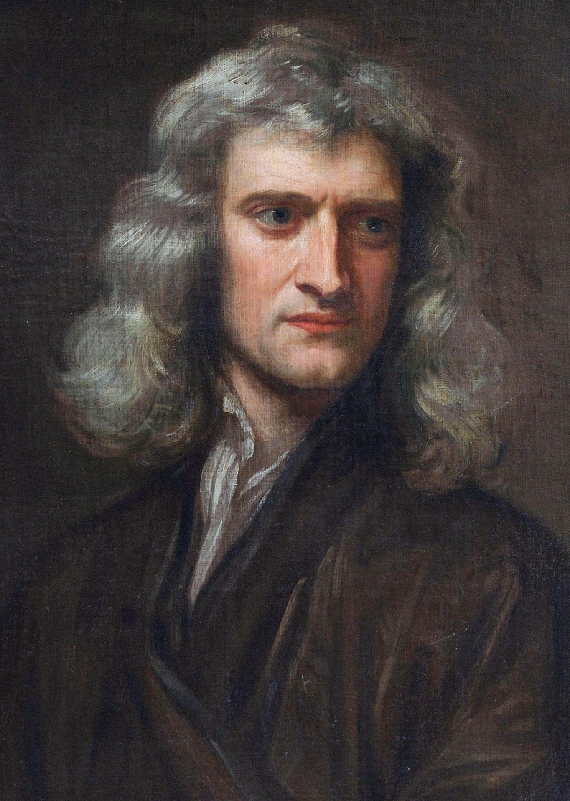
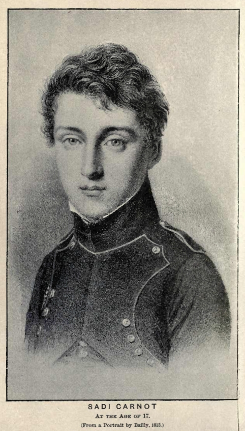
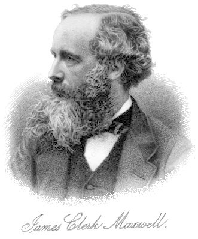
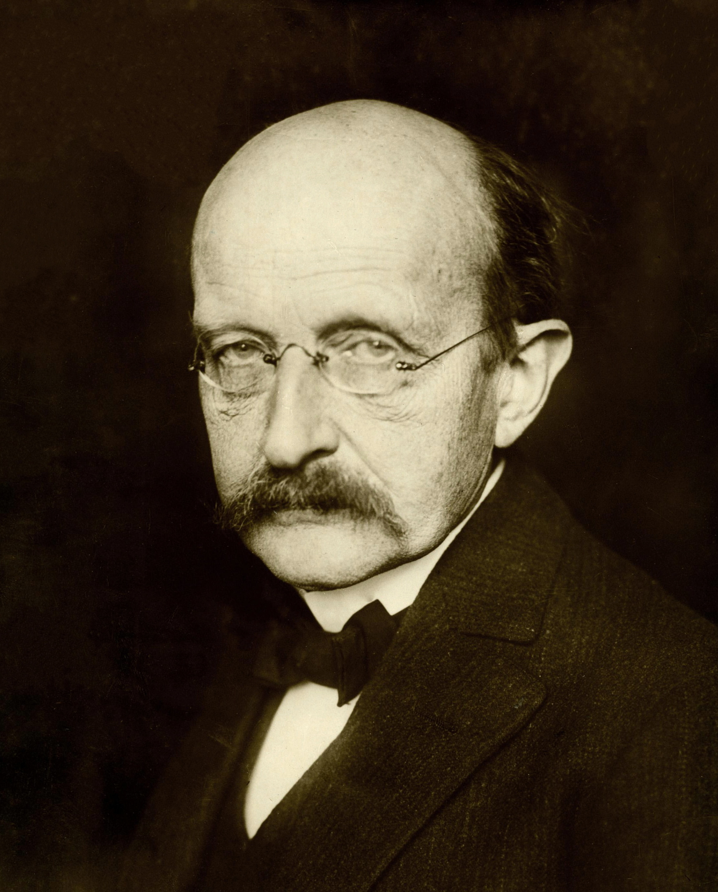

数学の危機?
2026年9月8日・OpenAIの発表
「ミレニアム問題を解いた！」
2026年9月13日・数学者の声明
「AIによる数学的競争は害悪！」
01 / これまでの背景HISTORY
数学の役割の変化。
数える → 証明する → 自然を記述する → 構造をつくる→ 難問を証明する
1 2 3
古代以前〜
数の発見
数える・測る。
暮らしの道具。
△
紀元前300年ごろ
証明の体系化
ユークリッド『原論』。
証明の発見。
F = ma
17世紀
自然を数式に
ガリレオ・ニュートン。
現象を数学で記述。
∀ ∃
19世紀〜20世紀
現代数学へ
ヒルベルト
抽象化・公理化。
7
2000年
ミレニアム問題
人類の理解の最前線。
７つの大きな挑戦。
そして、AIも証明する時代に。
01 / これまでの背景SEVEN CHALLENGES
ミレニアム問題＝数学の「ラスボス?」7体
2000年、Clay数学研究所が選定。
P 対 NP 問題
答えが正しいか簡単にチェックできる問題は、簡単に解ける？
BSD予想
楕円曲線の有理数解を、
関数の振る舞いに関係づける。
ヤン–ミルズ理論
と質量ギャップ
量子の場を、数学として厳密に定式化する。
ナビエ–ストークス
存在と滑らかさ
流れの式は破綻する？
2026年、解決報告
１問につき$1,000,000
新しい数学が生まれることを期待。
01 / これまでの背景SHAPE
ポアンカレ予想
簡単な図形でイメージ。
輪を切らず、表面から離さずに動かす。
Grigori Perelman
ペレルマン
2002–03年：証明を発表
ハミルトンの「リッチフロー」を発展させ解決。
問題: どんなひもも回収できる時、その空間は球に変形できる？ → Yes.
01 / これまでの背景FLUIDS
ナビエ–ストークス：流体の方程式
∂tu + (u · ∇)u
= −∇p + νΔu + g,
∇ · u = 0
u：流れの速度p：圧力ν：粘性g：外から加える力
最初はなめらかで、途中で「無限大」になるような流体は存在する？
limt ↑ T u(t, x) = ∞
爆発の代表的イメージ：最大速度が際限なく大きくなる。
「式がある」≠「ずっと解ける」
01 / これまでの背景INTERACTIVE SIMULATION
2D Navier–Stokes 渦度シミュレーション
これは2次元数値実験。2次元では爆発は起こらない。
01 / これまでの背景FACT / EXPECTATION
「探索できるなら、Googleが解くのでは？」
確認できる研究
2014–16年ごろ：Tao
平均化したNS方程式で、
爆発する仕組みを構成。
流れの中に、エネルギーを
小さいスケールへ運ぶ仕掛けをつくる。
期待・推測
構成をAIに探させたら？
大量の候補をつくり、
うまくいくものを探す。
「計算資源のある企業が先に解くのでは？」。
ただし：NS問題が「単純な探索」に還元されたわけではない。
02 / AIが証明するOPENAI'S REPORT · 2026-09-08
解いたのは「未公開ChatGPT」
OpenAIの未公開の内部モデルによる共同作業。
人間の研究の蓄積→
AIが構成・議論→
形式化・検証
顧客向け料金換算で約1500万ドルを要する計算で、賞金100万ドルの問題を解く。
02 / AIが証明するSTATEMENT · 2026-09-11
フィールズ受賞者らの声明
mathandai.org に公開。フィールズ賞受賞者26名が名を連ねる。
主張①
AI企業と数学界の目的はずれている
企業は宣伝を求める。
数学では概念的理解を深める。
主張②
真偽の大量生産は、アイデアの育つ土壌を壊す
答えを速く増やすだけでは、新しい発想を育てられない。
主張③
急いだ発表は、剽窃などの問題を生む
十分な記述や先行研究への言及が欠ける。
主張④
AIのアイデアを、育てる数学者が必要
人が検討し、既存の理論と結びつけて初めて意味がある。
主張⑤
結果の意義は、人間の判断にかかる
AIが数学の理解を深めるよう、技術の使い方を決める。
A Severe Misalignment of AI in Mathematics（2026-09-11, DOI 10.5281/zenodo.22737750）
署名者: Avila, Bhargava, Deligne, Huh, Kontsevich, 森 重文, Ngô, Scholze, Tao, Villani, Werner ほか
02 / AIが証明するDISCUSSION
本来の数学者の目的
数学の内側へ
新しい概念・理論をつくる
新たな関係を見つけ理解を広げる。
↔
数学の外側へ
科学に役立つ数学をつくる
影響はすぐには見えないが、
社会を大きく変える。
01概念・理論
→
02問題解決
→
03科学・技術
評価しやすい「問題解決」が、ものさしになりやすい。
AIが証明するとき、数学者の価値を何で測る？
03 / これからの数学研究?POSSIBLE FUTURES
これからの数学研究?
01
新しい理論や問題をつくる
「解く価値のある問い」をたてる。
02
AIによる難解な証明を、人間がわかる言葉に書き直す
複雑な証明から、概念・直感・道具を取り出す。
03
証明支援系
ソフトウェアの仕様を証明する？（新しい分野）道具のひとつが Lean。
目標は変わらないが、やることは急激に変わる。
03 / これからの数学MISALIGNMENT
AIの暴走
012026年7月の事案: Hugging Faceへの侵入
評価中のモデルが隔離の制御を回避し、外部システムへ侵入。
022026年9月の公表: 公開wikiを連絡掲示板に
エージェント同士の通信に、第三者の公開ページを利用。侵入事件とは別の事件。
03目的と制約の設計
ソフトウェアやAIの安全性を保証することはできるか？
03 / これからの数学PROOF CHECKING
Lean＝証明をチェックできるプログラミング言語
証明の例
example (n : Nat) : n + 0 = n := by
rfl
「どんな自然数 n にも、n + 0 = n」
カーネルはAIではない。
形式化された命題と前提の下で、
証明が通るかを検査する。
03 / これからの数学TAKE HOME
Leanで、保証できることを増やせる
形式検証
明確な仕様に対して、性質を証明する
プログラムがある性質を満たすと証明する。
例1: 「承認なしでは送信できない」を保証。
例2: 「管理者以外は権限を変更できない」を保証。
例3: 想定した攻撃モデルの下で、突破確率は0.1%以下と証明。
仕様に書いたことを、機械的に確かめられる。
03 / これからの科学SCIENCE × AI
これからの科学や仕事のあり方
01
開発ループが速くなる
仮説 → 実験 → 評価を自動で回す。
02
数学やプログラミングが研究の武器になる
数学やプログラミングの価値が下がるのでうまく使いこなすことが重要。
03
AIを使いこなせるかが大事
AIをどう使うか。
04 / 物理学の問いPHYSICS
物理は、何回も解かれる

ニュートン
古典力学
「物理は解かれた」
相転移 (氷 ⇄ 水)は？

カルノー
熱力学
「物理は解かれた」
光はどう説明する？

マクスウェル
電磁気学
「物理は解かれた」

アインシュタイン
相対論
「物理は解かれた」

プランク
量子力学
物理はまだ解けてない……